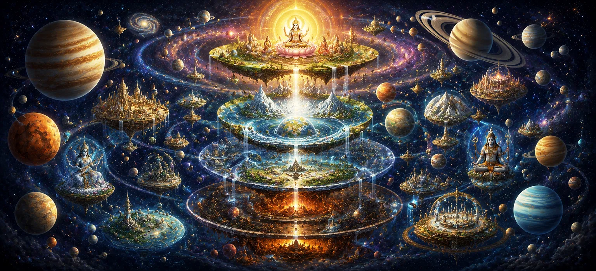

The Worlds and the Planets
Moving from the horizontal expanse of the seven great continental rings, Chapter 19 of Uma Samhita elevates its vision upward to explore Bhuvanakosha and the vertical hierarchy of the cosmic spheres—the fourteen worlds (chaturdasa bhuvana) and planetary systems. Having surveyed the earthly foundation upon which sentient beings act, the scripture now maps out the grand vertical architecture of the universe, demonstrating how the material and celestial planes are meticulously organized into higher heavens, intermediate atmospheric belts, and lower subterranean realms under the supreme governance of Lord Shiva.
This chapter details the exact positioning, nature, and inhabitants of the various lokas, ranging from the subterranean netherworlds where divine light battles ancient shadows, up through the earthly plane of moral choice, and soaring into the luminous celestial abodes of sages, deities, and eternal truth. Through this comprehensive cosmic survey, seekers are granted a profound vision of universal order, inspiring deep reverence for the infinite majesty of divine creation.
Pillars of the Cosmic Hierarchy
The Fourteen Worlds
The vertical axis comprising seven upper heavens and seven lower subterranean realms.
Planetary Orbits & Stars
Celestial bodies operating as cosmic timekeepers and energetic regulators.
Subterranean Netherworlds
Atala, Vitala, Sutala, Talatala, Mahatala, Rasatala, and Patala regions.
Solar and Lunar Spheres
The radiant chariots and luminous paths illuminating the material universe.
Higher Celestial Abodes
Mahar, Jana, Tapas, and Satya lokas inhabited by liberated sages and deities.
Divine Cosmic Order
The absolute harmony governing every tier of creation under Shiva's will.
Core Topics in This Text
- 01 The Vertical Architecture and the Fourteen Lokas →
- 02 The Seven Subterranean Realms (The Netherworlds) →
- 03 The Earthly Plane and the Intermediate Atmosphere →
- 04 Stellar Orbits, Sun, Moon, and Planetary Spheres →
- 05 The Higher Celestial Heavens and Abodes of Truth →
- 06 Transitioning from Cosmic Geography to the Sacred Mantra →
The Vertical Architecture and the Fourteen Lokas
This opening section establishes the foundational concept of the fourteen worlds (chaturdasa bhuvana) that constitute the vertical axis of the universe. Uma Samhita details how creation extends simultaneously downward into subterranean depths and upward into ethereal spiritual heavens, all anchored around the central axis of the cosmic order.
Every realm within this grand hierarchy serves as a specific plane of experience, holding distinct forms of consciousness, energetic frequencies, and evolutionary opportunities governed by the overarching law of karma and divine grace.
The Seven Subterranean Realms (The Netherworlds)
Extending downward from the earth are the seven lower realms known as Atala, Vitala, Sutala, Talatala, Mahatala, Rasatala, and Patala. Far from being mere places of punishment, these subterranean regions possess wondrous architecture, brilliant gems, luxurious palaces, and powerful beings endowed with immense material opulence.
The scripture explains the distinct characteristics of each netherworld, detailing how Danavas, Nagas, and other celestial beings reside there under cosmic ordinances that balance the light of the upper spheres with the profound darkness of the depths.
The Earthly Plane and the Intermediate Atmosphere
At the center of the vertical axis lies Bhu-loka (the earthly plane) and Bhuvar-loka (the intermediate atmospheric realm). This middle tier bridges the physical and the unseen, serving as the immediate domain of human existence, weather patterns, clouds, and invisible spiritual agencies.
Uma Samhita emphasizes that the atmospheric belt acts as a dynamic energetic conduit, transmitting solar radiance and cosmic vitality down to the continental lands where conscious spiritual effort takes place.
Stellar Orbits, Sun, Moon, and Planetary Spheres
Ascending into Swar-loka (the celestial heaven), the text provides a detailed account of the planetary systems, solar chariot, lunar orbit, and stellar constellations (Nakshatras). These luminous bodies do not merely drift in blind mechanics; they are grand cosmic regulators driven by divine laws.
The scripture maps the precise paths of Surya (the Sun) and Chandra (the Moon), explaining how their movements govern seasons, measure time, sustain biological life, and nourish the entire universal ecosystem.
The Higher Celestial Heavens and Abodes of Truth
Beyond the planetary spheres lie the higher spiritual realms of Mahar-loka, Jana-loka, Tapas-loka, and Satya-loka (also known as Brahma-loka). These sublime abodes are inhabited by enlightened sages, perfected yogis, and divine entities who have transcended ordinary material bondage.
Uma Samhita reveals that these exalted tiers represent progressive states of spiritual realization and purity, culminating in the ultimate abode of eternal truth and liberation overseen by Lord Shiva.
Transitioning from Cosmic Geography to the Sacred Mantra
Having traversed the entire universal framework from the lowest netherworlds to the highest celestial heavens, Uma Samhita prepares to transition from macrocosmic geography to the inner spiritual science of the divine sound, focusing next on the sacred mantra and its profound teachings.
이 এটি পরবর্তী অধ্যায়ের পথ প্রশস্ত করে, যেখানে পবিত্র গ্রন্থটি বাহ্যিক সৃষ্টির বিশালতা থেকে ভেতরের দিকে মনোনিবেশ করে এবং সাধককে পরম মুক্তির জন্য দিব্য মন্ত্র জপ ও উপাসনার গোপন রহস্যের সাথে পরিচিত করে।
Spiritual Insight
Chapter 19 teaches us that the universe is a vast, multi-dimensional living organism structured in perfect harmony. By meditating on the fourteen worlds and planetary spheres, our awareness expands beyond earthly limitations, reminding us that every layer of existence is permeated by the divine presence of Lord Shiva.
Frequently Asked Questions
① How are the worlds and planets structured in Uma Samhita?
The cosmos is organized into a vertical hierarchy of fourteen worlds (fourteen lokas), encompassing subterranean realms, the earthly plane, and higher celestial heavens.
② What role do the planetary orbits play in Puranic cosmology?
Planets, stars, and stellar constellations operate as celestial timekeepers and energetic regulators, maintaining the rhythm of universal creation under cosmic law.
③ Why is the study of celestial worlds significant for spiritual seekers?
Understanding the multi-dimensional structure of the universe reminds seekers of the vast expanse of creation and directs their devotion toward the supreme lord of all realms, Lord Shiva.